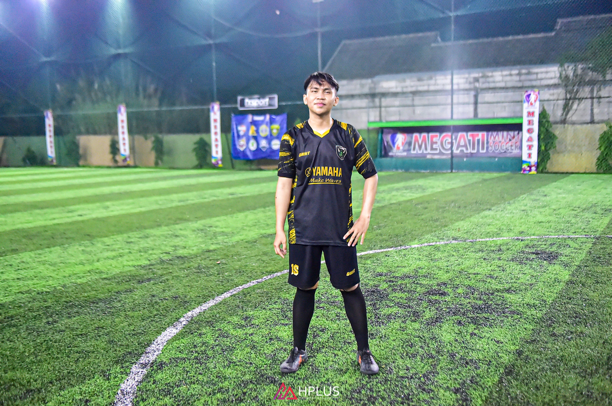

Nama Lengkap:
Dandi Nur Ramadhan

Kontak:
Email : ramadhandandi502@gmail.com
Telepon : 085770096016
LinkedIn : LinkedIn
Alamat:
Jl. Banteng Gang Nayar 2, RT/RW 005/011
Kel. Kranji, Kota Bekasi , Jawa Barat, 17135
Tentang Saya:
Saya memiliki prinsip disiplin dalam waktu, mampu berkomunikasi dengan baik. Saya memiliki semangat tinggi dalam bekerja, jujur dalam segala hal, teliti dalam bekerja, dan mampu bekerja bersama tim maupun individu.
Pendidikan:
- SMK Teratai Putih Global 1 Bekasi - Teknik Kendaraan Ringan (2020)
- Non Formal - Ahli K3 Umum BNSP (2025)
Pengalaman Kerja:
- PT. Yamaha Music Mfg. Asia (Maret 2021 - Juni 2023)
- PT. Yasunli Abadi Utama Plastik (Desember 2023 - Maret 2024)
- PT. Nutrifood Indonesia (November 2024 - Mei 2025)
Keahlian:
Microsoft Office
Packing
Cutting Slitter
Pallet Mover
MySQL